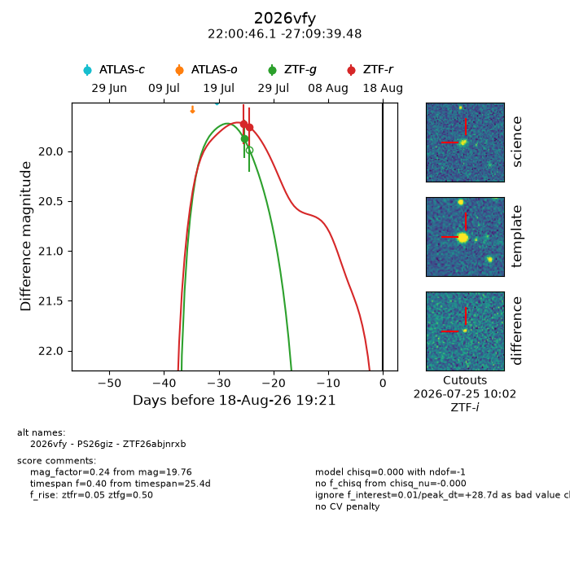
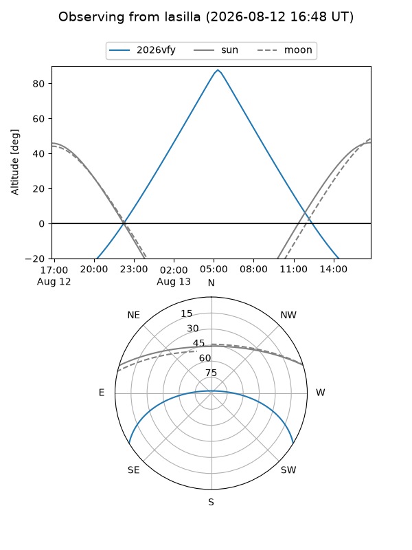
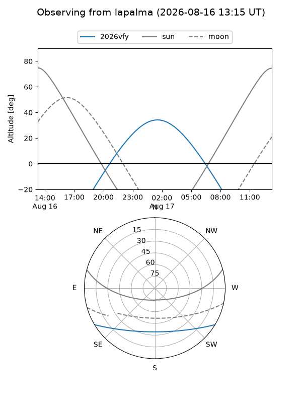
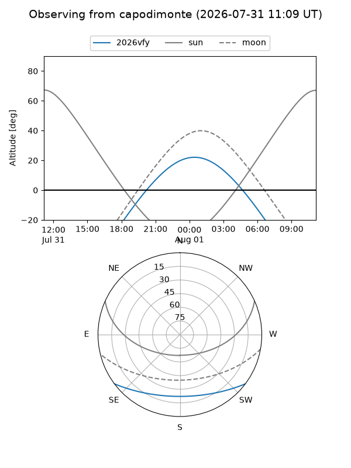
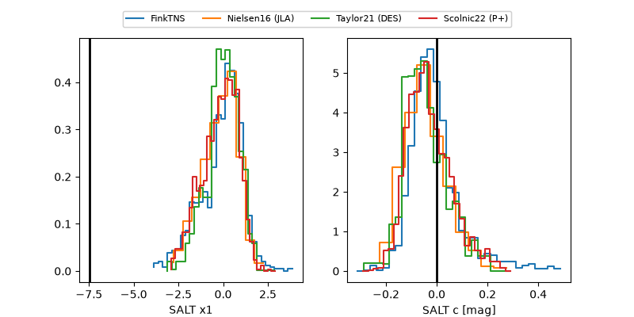

2026vfy
Target 2026vfy at 2026-08-18 19:24
Aliases and brokers:
FINK-ZTF: ztf.fink-portal.org/ZTF26abjnrxb
Lasair-ZTF: lasair-ztf.lsst.ac.uk/objects/ZTF26abjnrxb
ALeRCE-ZTF: alerce.online/object/ZTF26abjnrxb
YSE-PZ: ziggy.ucolick.org/yse/transient_detail/2026vfy
TNS name: wis-tns.org/object/2026vfy
Direct TNS query: direct search
alt names
ZTF26abjnrxb (ztf,fink_ztf)
2026vfy (tns,yse)
PS26giz (panstarrs)
Coordinates:
equatorial (ra, dec) = 330.1920,-27.16097
equatorial (HMS+DMS) = 22:00:46.09,-27:09:39.48
galactic (l, b) = (22.7814,-52.22271)
Flags:
TNS type: nan
peak dt: +28.7
Photometry:
last ztfg=19.88, ztfr=19.76
1 ztfg, 2 ztfr detections
Lightcurve

Visibility



Additional plots
